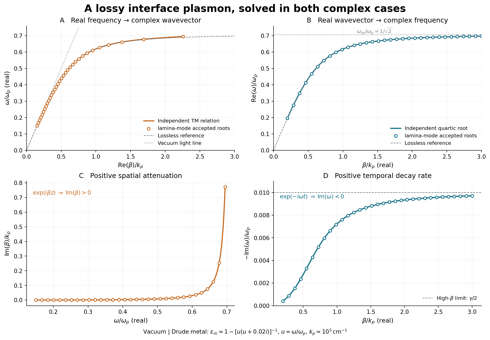
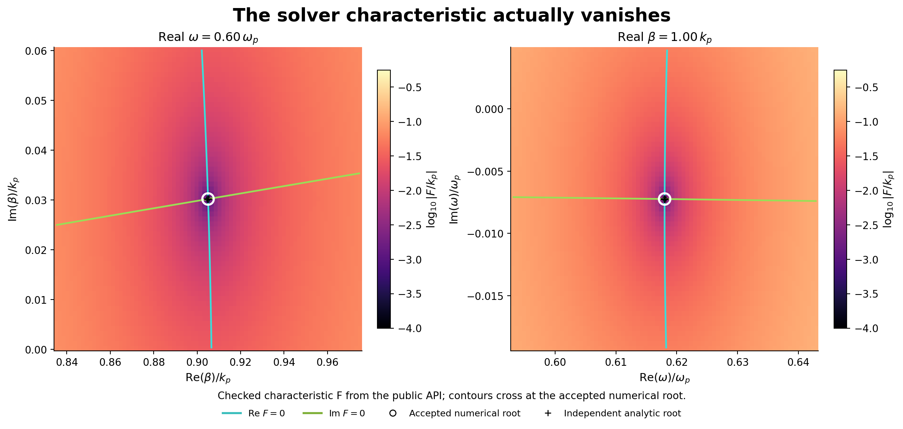
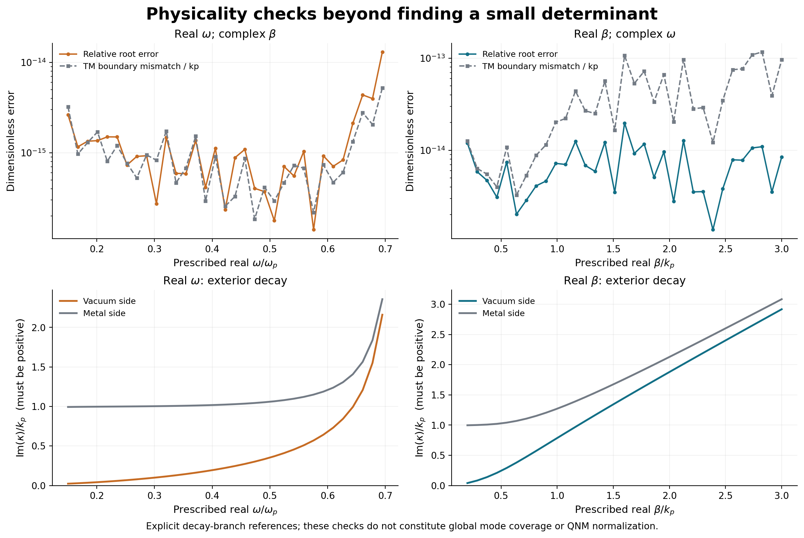

Vacuum | illustrative passive Drude metal, not a fitted material. Time exp(−iωt), propagation exp(+iβz). Real-frequency and real-wavevector curves are different slices at finite loss.
33 independent public discovery/refinement solves per case, two map solves, five local TE controls per case. Analytic references place local charts; numerical markers come from accepted solver observations. This does not demonstrate blind global discovery.



u=k0/kp=ω/ωp, v=β/kp, εm=1−1/[u(u+iη)]. v=u√[εm/(1+εm)]. Temporal roots solve u⁴+iηu³−(1+2v²)u²−2iηv²u+v²=0 on the positive lossless bound branch. The unsquared TM condition κd/εd+κm/εm=0, exterior decay and passive signs are checked. Scatter2/Transfer2 comparisons include roots and nearby off-root evaluations.
Metallic named classification remains unsupported. Explicit complex anchors retain unspecified built-in radiation qualification. The physical bound branch is checked independently. No fields, QNM normalization or global coverage are claimed. TE controls apply only to the recorded local windows.
{
"complex_beta": {
"accepted_points": 33,
"max_relative_root_error": 1.3050754028448989e-14,
"max_boundary_mismatch_over_kp": 5.216410013653489e-15,
"max_characteristic_residual_over_kp": 4.567076343366416e-15,
"max_scatter_transfer_value_difference_over_kp": 1.4273168140722168e-19,
"min_dielectric_decay_over_kp": 0.023069733202366206,
"min_metal_decay_over_kp": 0.9936814163405787,
"te_modes_at_sampled_checks": 0
},
"complex_frequency": {
"accepted_points": 33,
"max_relative_root_error": 1.978524625335599e-14,
"max_boundary_mismatch_over_kp": 1.1694383086781385e-13,
"max_characteristic_residual_over_kp": 1.169368692747872e-13,
"max_scatter_transfer_value_difference_over_kp": 2.2204629898446352e-21,
"min_dielectric_decay_over_kp": 0.040016332016386616,
"min_metal_decay_over_kp": 0.9970245072036885,
"te_modes_at_sampled_checks": 0
},
"model": {
"epsilon_infinity": 1,
"epsilon_dielectric": 1,
"gamma_over_omega_p": 0.02,
"kp_inverse_cm": 100000.0,
"fitted_material": false,
"te_checks_per_case": 5,
"frequency_reference": "explicit complex; built-in radiation qualification remains unspecified",
"branch_tracking": "independent local point searches; analytic solution locates valid benchmark charts"
}
}
cargo run --release --locked --example plasmon_validation -- --suite full --output NEW_DIRECTORY python scripts/plot_plasmon_validation.py NEW_DIRECTORY
See docs/plasmon-validation.md for optional plotting dependencies, conventions and numerical settings. Raw numerical summary.json, settings.txt, roots.csv, evidence files and failure records belong to this run. PNG, PDF and SVG versions of each figure are available beside this page.